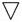

流程程序图
流程程序图是程序分析中最基本、最重要的分析技术，它是进行流程程序分析过程中最基本的工具。
流程程序图运用工序图示符号对生产现场的整个制造程序做详细的记录，以便对零部件、产品在整个制造程序中的操作、搬运、检验、储存、等待作详细的研究与分析，特别是用于分析其搬运距离和等待、储存等“隐藏成本”的浪费。
流程程序图是方法研究改进工作方法的有用工具。不论作业研究过程中运用何种技术，流程程序图总是必经的一步，它是应用最普遍的一种工具。
流程程序图依其研究的对象可分为：物料型流程程序图和人员流程程序图。
物料型流程程序图——对材料或产品流程程序图，用于记录产品或零件在加工或搬运过程中被处理的步骤。
人型流程程序图——人员流程程序图，用于记载操作人员在生产过程中的一连串活动。
流程程序图由操作、搬运、检验、储存、等待五种符号构成。